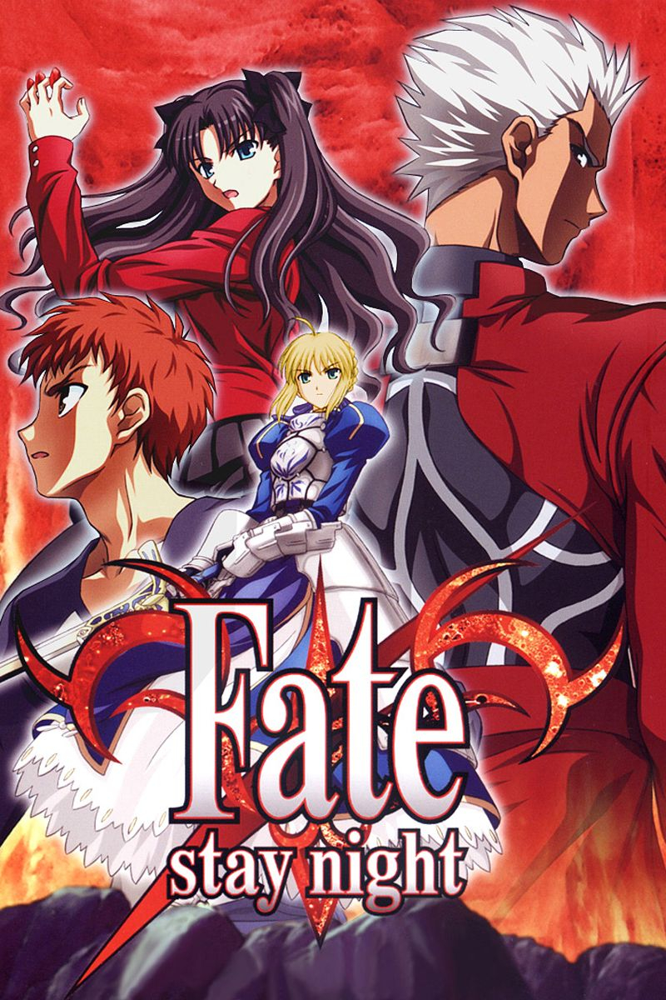
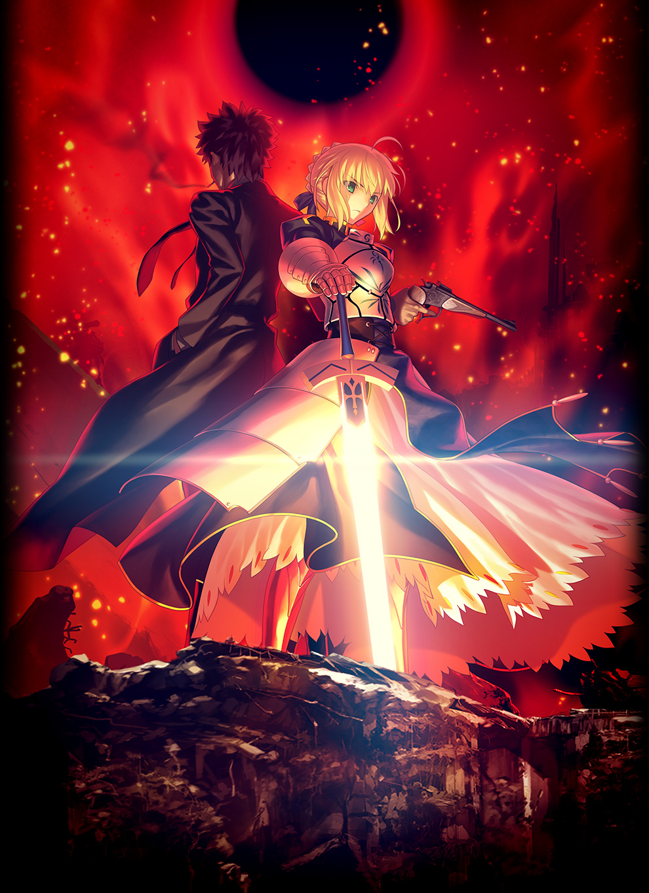
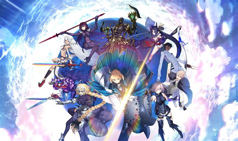

Fate/Stay Night

Fate/Stay Night é a visual novel original desenvolvida pela Type-Moon, lançada em 2004. A história acompanha Shirou Emiya, um jovem mago envolvido na Quinta Guerra do Santo Graal, um torneio mortal entre magos e espíritos heroicos.
Fate/Zero

Fate/Zero é a prequela de Fate/Stay Night, narrando os eventos da Quarta Guerra do Santo Graal. Escrita por Gen Urobuchi, a obra explora temas de moralidade, sacrifício e desejo através dos olhos de Kiritsugu Emiya.
Fate/Grand Order

Fate/Grand Order é um jogo mobile lançado em 2015, que se tornou um fenômeno mundial. Nele, jogadores assumem o papel de Mestres que viajam por diversas eras para corrigir singularidades e salvar a humanidade.